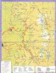
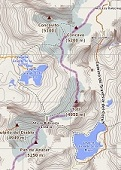
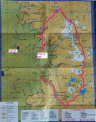
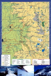
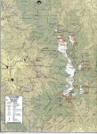
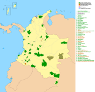

Parts of the park could be closed!
Over the past few years, parts of the park have closed at times for various reasons. As this is changing all of the time,
please see this LonelyPlanet forum for the most up to date information: http://www.lonelyplanet.com/thorntree/thread.jspa?threadID=2371543Parque Nacional Natural El Cocuy
Maps
Looking for a map? Here are the best digital ones I've been able to find or been sent. If you're wondering where exactly PNN El Cocuy is in Colombia, go to the home page and check out the Google map there.
Once you get to Guican or El Cocuy, the park rangers should be able to provide you with a basic black and white map that looks like the first map I have below (just no color). Every now and then they carry the nice color ones, but don't count on it. If you're just doing day hikes, and especially if you're with a guide, you won't need anything else. The main trails are well marked. The only time I'd highly recommend trying to get one of the nice color maps, which you can find in random bookstores in Bogota, is if you're planning on doing the 6 day trek without a guide.
The first map is the best quality, but all of the first four show the park boundary, road, main trails, contour/elevation lines, and some of the cabanas. The park officially starts at the 4000 meter elevation line on the western side, which is where you'll be hiking. The last map is just an interesting view of all the national parks in Colombia.
***Just click on the small thumbnail of the map to open the large version in a new window, then right-click and "Save image as..." to download the maps to your computer.***
Map #1: Highest quality park map, with roads and trails clearly marked.

Map #2: Best topographic view; and THIS (click here) is an awesome interactive topographic web map.

Map #3: Good quality, with the 6 day round trip trek highlighted in pink.

Map #4: Similar to Map 1, a little lower quality.

Map #5: Not too great.

Map #6: Map of all the national parks in Colombia.